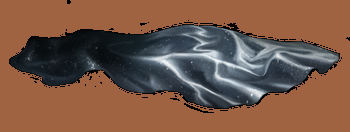

The Cloak Of Invisibility

The Cloak of Invisibility is a magical artefact used to render the wearer invisible,
and one of the fabled Deathly Hallows. In "The Tale of the Three Brothers",
it was the
third and final Hallow created, supposedly by Death himself (whom had the cloak in his
possession at that time),
and bestowed upon Ignotus Peverell after he requested,
as his bounty, for something with the power to hide him if he were to go place to
place without being followed by Death.
According to legend, whoever united it with
the other two Hallows
(the Elder Wand and the Resurrection Stone)
would become the
Master of Death.
This invisibility cloak was the only known one that would not fade with age and
would provide everlasting protection to the wearer,
something no normal invisibility
cloak could provide. As such,
it was the only Hallow known to have been successfully
passed down from generation to generation since Ignotus' time.
In 1991, it passed to
the possession of Harry Potter
who used it to
great success in the Second Wizarding War and resolved to pass it down to his
own children.
Hello